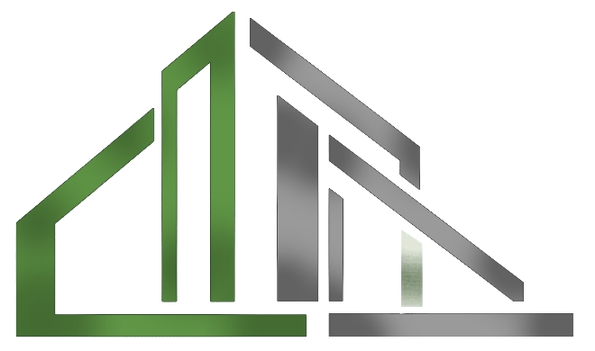
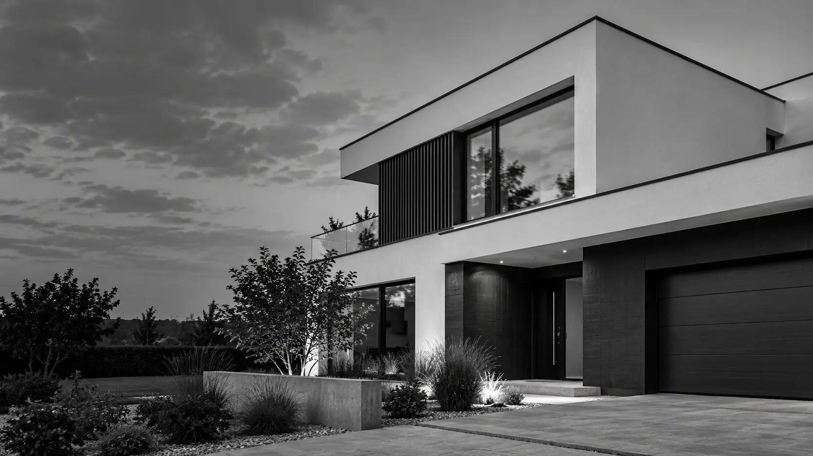

ModernKonstrukt
Alapoktól a kulcsátadásig, egy kézben.
Családi ház, bővítés, felújítás. Baján és 100 km-es körzetben dolgozunk. Egy cég, egy felelős az alapozástól a kulcsátadásig.
Referenciáink →Visszahívjuk 24 órán belül.
Adjon meg egy telefonszámot, és fogadja el a tájékoztatót.
Három gyors kérdés, hogy felkészülten hívjuk.
Az elküldés nem sikerült. Kérjük, hívjon: +36 30 532 8127
24 órán belül hívjuk.
Egyeztetünk egy időpontot az ingyenes helyszíni felmérésre, utána tételes, írásos ajánlatot kap.
{{summary}}
Egy cég.
Minden szakág.
Alapozás · kőműves munkák · tetőfedés · gépészet · villanyszerelés · burkolás · homlokzat · nyílászárók. Nem kell külön szakembereket keresnie és összehangolnia: mi szervezzük, mi felelünk érte.
Referenciák.
Elkészült és jelenleg épülő munkáink. Ilyet szeretne? Beszéljünk róla.
Négy lépés.
Egy ház.
Kattintson a lépésekre, és nézze, hogyan épül fel a háza az első hívástól a kulcsig.
- Az 1. lépés ingyenes Kérem a felmérést →
Baja.
És 100 km.
Baján és 100 km-es körzetben dolgozunk. Nem biztos, hogy a települése belefér? Keressen bátran, beszéljük meg.
„Számomra az építés nem csupán szakma, hanem az alkotás öröme is. Különleges érzés látni, ahogyan egy elképzelésből kézzelfogható, értéket teremtő otthon születik. Munkám során a műszaki precizitásra, a minőségi kivitelezésre, a részletek iránti igényességre és a megrendelői elképzelések megvalósítására egyaránt nagy hangsúlyt fektetek. Hiszem, hogy a valódi minőség a gondos tervezésben, a felelős döntésekben és a részletekre fordított figyelemben rejlik.”
Kezdjük
a felméréssel.
Ingyenes és kötelezettségmentes. Kimegyünk, felmérjük, és tételes, írásos ajánlatot kap.